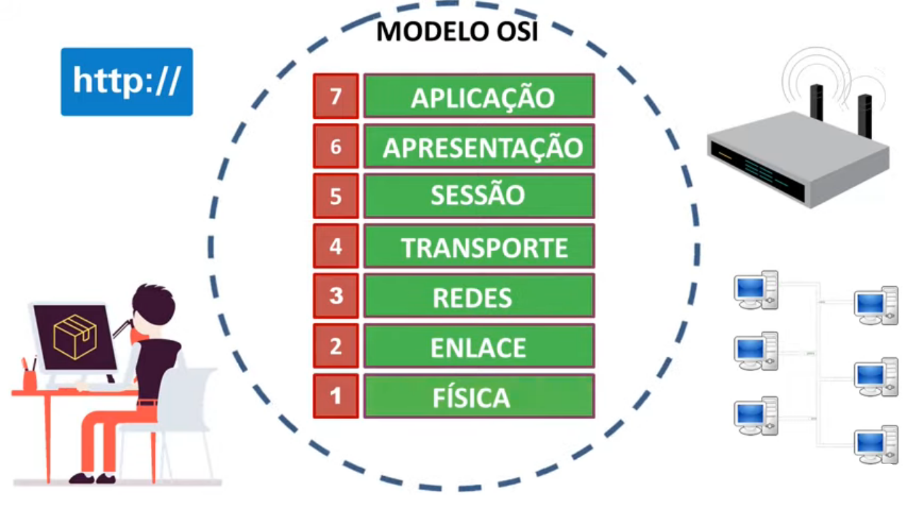

A OSI (Open Systems Interconnection) é um modelo de referência que descreve como os dados são transmitidos e recebidos. Desenvolvido pela ISO (International Organization for Standardization), o modelo OSI é dividido em sete camadas, cada uma representando uma função específica no processo de comunicação de dados. Sendo elas:
Camada Física: Lida com a transmissão física dos dados, como sinais elétricos, como cabos de fibra óptica, cabos de cobre e ar.
Camada de Enlace de Dados: Responsável pelo controle de acesso ao meio e pela detecção e correção de erros na camada física.
Camada de Rede: Gerencia o roteamento dos dados através de uma rede, determinando o melhor caminho para a entrega.
Camada de Transporte: Controla o fluxo de dados, garante a entrega ordenada e confiável e fornece correção de erros.
Camada de Sessão: Estabelece, gerencia e encerra as sessões entre os aplicativos em diferentes dispositivos.
Camada de Apresentação: Lida com a tradução, criptografia e compressão dos dados para garantir que possam ser entendidos pelo destinatário.
Camada de Aplicação: Fornece interfaces para os aplicativos de usuário e serviços de rede, como e-mail, navegação na web e transferência de arquivos.
O TCP/IP (Transmission Control Protocol/Internet Protocol) é um modelo que foi criado bom base no modelo OSI. Ele funciona como um meio de comunicação em rede permitindo a comunicação entre diferentes dispositivos e sistemas de uma forma organizada e padronizada. Ele foi projetado para enviar pacotes pela internet e garantir a entrega bem-sucedida de dados e mensagens nas redes. O TCP/IP opera em diferentes camadas, e há duas versões principais do modelo: o modelo de 4 camadas e o modelo de 5 camadas.
1- Acesso ao Meio: é responsável pelo envio de dados entre os dispositivos conectados diretamente.
2- Internet: O protocolo IP pertence a esta camada. Ele é responsável pelo roteamento dos pacotes de dados entre as redes.
3- Transporte: é responsável pelo controle de fluxo, garantindo a conexão dos dados sólida e confiável. Ele verifica se os dados foram enviados corretamente sem erros.
4- Aplicação: é responsável pela interação dos usuários, como a comunicação pelas plataformas de mensagens.
1- Física: é responsável pela recepção e transmissão física dos bits.
2- Enlace: é responsável pela comunicação entre os dispositivos na rede.
3- Internet/Rede: é responsável pelo roteamento e o endereço de IP
4- Transporte: tem a mesma função que à camada de transporte do modelo de 4 camadas.
5- Aplicação: tem a mesma função que à camada de aplicação do modelo de 4 camadas.
O modelo OSI (Open System Interconnection) é um modelo de referência que define sete camadas para comunicações de rede, equanto o TCP (Transmission Control Protocol) é um protocolo de transporte que opera na camada de transporte do modelo OSI. Em resumo, o OSI é um modelo teórico, enquanto o TCP é um protocolo prático utilizado para comunicações em reds de computadores.
Além disso, apesar do modelo OSI ser a referência para as redes e toda sua nomenclatura, a arquitetura TCP/IP é a que foi realmente implementada e está em uso até os dias de hoje tanto nas redes internas (Intranets) como na internet. No TCP/IP não costumamos nos referir pelos números das camadas e sim pelos nomes delas, pois quando nos referimos pelo número da camada estamos falando do OSI. TCP/IP também é o mais utilizado no mercado.